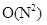

Sorting Algorithms
Bubble Sort Optimized
Η ταξινόμηση φυσαλίδας είναι ένας απλός αλγόριθμος ταξινόμησης, ο οποίος διατρέχει επανειλημμένα τη λίστα που πρόκειται να ταξινομηθεί συγκρίνοντας κάθε ζευγάρι γειτονικών στοιχείων και ανταλλάσοντάς τα σε περίπτωση που βρίσκονται σε λανθασμένη σειρά. Το πέρασμα διαμέσου της λίστας επαναλαμβάνεται μέχρις ότου να μη χρειάζεται ανταλλαγή στοιχείων, το οποίο υποδηλώνει ότι η λίστα έχει ταξινομηθεί. Ο αλγόριθμος πήρε το όνομα του από τον τρόπο που τα στοιχεία με πολύ μικρές τιμές αναδύονται στην κορυφή της λίστας όπως οι φυσαλίδες στην επιφάνει του νερού. Αν και είναι απλός αλγόριθμος, είναι πολύ αργός και καθόλου πρακτικός στις περισσότερες περιπτώσεις ακόμη κι αν συγκριθεί με την ταξονίμηση με εισαγωγή. Μπορεί να γίνει πρακτικός αν η λίστα είναι ταξινομημένη αλλά περιστασιακά κάποια στοιχεία βρίσκονται εκτός θέσης κοντά όμως στη σωστή τους θέση.
Όσον αφορά την απόδοση του αλγορίθμου η πολυπλοκότητα χειρότερης περίπτωσης είναι  , όπου Ν είναι ο αριθμός των στοιχείων προς ταξινόμηση. Υπάρχουν άλλοι αλγόριθμοι ταξινόμησης πιο αποδοτικοί αλλά ακόμα και η ταξινόμηση με εισαγωγή, που έχει την ίδια πολυπλοκότητα χειρότερης περίπτωσης, τις περισσότερες φορές έχει καλύτερα αποτελέσματα. Επομένως η ταξινόμηση φυσαλίδας δεν αποτελεί πρακτική λύση όταν το Ν είναι μεγάλος αριθμός.
Ο αλγόριθμος της φυσαλίδας μπορεί εύκολα να βελτιστοποιηθεί παρατητώντας ότι το Ν-οστό πέρασμα βρίσκει το Ν-οστό μεγαλύτερο στοιχείο και το τοποθετεί στην τελική του θέση. Έτσι ο εσωτερικός βρόχος μπορεί να αποφύγει τον έλεγχο των Ν-1 τελευταίων στοιχείων όταν τρέχει για Ν-οστή φορά. Γενικότερα, αυτό μπορεί να εφαρμοστεί αν περισσότερα στοιχεία έχουν τοποθετηθεί στην τελική τους θέση. Ειδικότερα όλα τα στοιχεία μετά την τελευταία ανταλλαγή είναι ταξινομημένα και δε χρειάζεται να ελεγχθούν ξανά. Αυτό επιτρέπει στον βελτιστοποιημένο αλγόριθμο να προσπεράσει αρκετά στοιχεία με αποτέλεσμα να μειωθούν κατά 50% οι συγκρίσεις στη χειρότερη περίπτωση.
Pseudocode
2.
3.
4.
5.
6.
7.
8.
9.
10.
11.
12.
13.
14.
15.end
Applet
Example
Επανάληψη 1
Ο δείκτης i θα πάρει την τιμή 1 και θα ελέγξουμε αν ισχύει η συνθήκη για τα πρώτα δύο στοιχείο του Α.
i=1, A[0]=15, A[1]=1, 15>1
Η συνθήκη ισχύει, τα στοιχεία αλλάζουν θέσεις μεταξύ τους και η μεταβλητή changes παίρνει την τιμή 1.
15↔1, changes=1
Ο πίνακας Α έχει την ακόλουθη μορφή μετά την πρώτη επανάληψη.
A=[1 15 7 3 2 25 20 18 30 250]
Επανάληψη 2
Ο δείκτης i γίνεται 2 και η συνθήκη ισχύει ξανά οπότε γίνεται ανταλλαγή των δύο στοιχείων με τη μεταβλητή changes να κρατάει τη θέση της τελευταίας ανταλλαγής.
i=2, A[1]=15, A[2]=7, 15>7 15↔7, changes=2
Ο πίνακας Α πλέον έχει πάρει την ακόλουθη μορφή.
A=[1 7 15 3 2 25 20 18 30 250]
…
Επανάληψη 9
Ο δείκτης i γίνεται 9, η συνθήκη όμως δεν ισχύει και τα στοιχεία παραμένουν στη θέση τους. Η μεταβλητή changes έχει κρατήσει τη θέση της τελευταίας ανταλλαγής στοιχείων.
i=9, A[8]=30, A[9]=250, 30<250, changes=7
Ο πίνακας Α είναι ο ακόλουθος.
A=[1 7 3 2 15 20 18 25 30 250]
Το n λαμβάνει την τιμή του changes με σκοπό να μειώσει το πλήθος των επαναλήψεων (n = 7). Επειδή ισχύει n ≠ 0 επαναλαμβάνονται οι εντολές του βρόχου.
…
Στην τελευταία είσοδο του βρόχου while το n θα λάβει την τιμή 2. Η μεταβλητή changes μηδενίζεται και ξεκινάει η επανάληψη για i = 1.
i=1, A[0]=1, A[1]=2, 1<2 changes=0
i=2, A[1]=2, A[2]=3, 2<3 changes=0
Δεν ικανοποιείται η συνθήκη σε καμία περίπτωση και τα στοιχεία παραμένουν στις θέσεις τους. Το n λαμβάνει την τιμή 0 από το το changes και έτσι ικανοποιείται η συνθήκη τερματισμού του βρόχου while. Ο πίνακας Α έχει πλέον ταξινομηθεί.
A=[1 2 3 7 15 18 20 25 30 250]